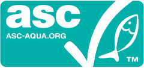

Your salmon solution partner
Salmón Atlántico del sur de Chile, fresco, congelado y ahumado, con una cadena integrada que nos permite responder a cada cliente con la misma calidad. [contenido por definir]
Soluciones para cada mercado
-
Filetes, porciones y salmón entero despachados por vía aérea a pocas horas de la cosecha, para llegar a la mesa de tus clientes con la frescura del sur de Chile. [contenido por definir]
-
Porciones y filetes congelados individualmente que conservan su textura y sabor, listos para retail y food service en cualquier destino y en cualquier temporada. [contenido por definir]
-
Ahumado en frío y en caliente en nuestra propia planta, con ingredientes reconocibles como sal del desierto, roble chileno y azúcar. [contenido por definir]
Del sur de Chile a las mesas del mundo
-
30+
países de destino en América, Europa y Asia [contenido por definir]
-
+400
clientes en retail, food service e industria [contenido por definir]
-
90 mil
toneladas exportadas cada año [contenido por definir]
Oficinas comerciales
- Puerto Montt
- Santiago
- Miami
- Puerto Montt, Chile
- Santiago, Chile
- Miami, Estados Unidos
- Estados Unidos
- Canadá
- México
- Brasil
- Argentina
- España
- Alemania
- Rusia
- China
- Corea del Sur
- Japón
- Oficina comercial
- Mercado
Nuestras marcas
Productos frescos, congelados y ahumados
Formatos, especificaciones y fichas técnicas de toda nuestra línea en un solo documento. [contenido por definir]
Descargar catálogo (PDF) [peso por definir]Del cultivo a la mesa
01. Genética y ovas
Programa genético propio para peces sanos y de crecimiento eficiente. [contenido por definir]
02. Agua dulce
Pisciculturas con recirculación donde crecen alevines y smolts. [contenido por definir]
03. Centros de mar
Engorda en las regiones de Los Lagos, Aysén y Magallanes. [contenido por definir]
04. Cosecha
Cosecha planificada según la demanda de cada mercado. [contenido por definir]
05. Proceso
Plantas propias de proceso primario, secundario y ahumado. [contenido por definir]
06. Distribución
Despacho aéreo y marítimo a clientes en más de 30 países. [contenido por definir]
Certificaciones
Nuestros procesos están certificados por los principales estándares internacionales de acuicultura e inocuidad alimentaria. [contenido por definir]
-

Estándar internacional de acuicultura responsable: impacto ambiental, bienestar animal y relación con comunidades. [contenido por definir]
-
Prácticas responsables en toda la cadena: pisciculturas, centros de engorda y plantas de proceso. [contenido por definir]
-
Estándar de inocuidad alimentaria para plantas de proceso. [contenido por definir]
-
Buenas prácticas de acuicultura, trazabilidad y seguridad de los trabajadores. [contenido por definir]
-
Seguridad y calidad de alimentos procesados, exigido por el retail europeo. [contenido por definir]
-
Sistema de control de inocuidad en cada etapa del proceso. [contenido por definir]
-
Productos aptos según la normativa alimentaria judía. [contenido por definir]
-
Productos aptos según la normativa alimentaria islámica. [contenido por definir]
Hablemos de tu próximo pedido
Nuestro equipo comercial atiende a clientes en cada mercado. [contenido por definir]
Preguntas frecuentes
-
Depende del producto y del destino. Escríbenos con el detalle y te enviaremos una propuesta. [contenido por definir]
-
Sí, elaboramos productos de marca propia para retail y food service. [contenido por definir]
-
Cada lote se identifica desde el centro de cultivo hasta el despacho, gracias a nuestra cadena integrada. [contenido por definir]
-
Están incluidas en el Catálogo Multi X. También puedes pedirlas al equipo comercial. [contenido por definir]